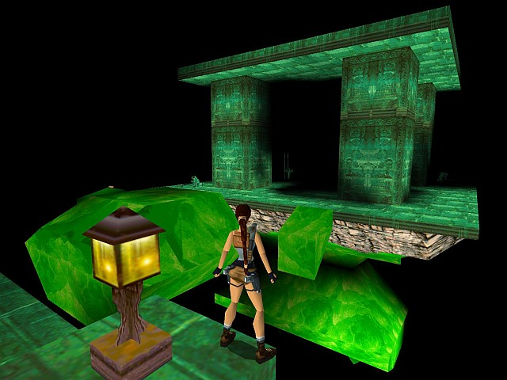

In the second installment in the series,
archaeologist-adventurer Lara Croft goes after the legendary Dagger of Xian,
an artifact rumored to give whoever possesses it the power of the dragon.
Naturally Lara isn't the only one after the dagger.
The Fiamma Nera (Italian for "Black Flame"), a cult led by the megalomaniacal Marco Bartoli,
will stop at nothing to get there first.

Legend has it that when you drive the Dagger of Xian into your heart,
you acquire the power of the dragon. Literally.
In Ancient China, the Emperor was the holder of this power and with his
army alongside him, he was a force to be reckoned with.
Thus he staked claim to the vast lands that are China.
His final battle, however, ended in defeat.
While people fell into submission all around him,
the warrior monks of Tibet would not relent and courageously fought
against his evil. Knowing the power of the dagger,
they succeeded in removing it from the Dragon Emperor's heart,
reducing him and his army to carnage. The dagger was returned to
its resting place within The Great Wall and locked up for all time.
Now three parties hold the dagger close to their heart.
And all for entirely different reasons. Lara, forever the adventurer,
is one of these. In her travels, she will encounter the other two.
Gameplay is still a combination of action and adventure,
but the sequel includes quite a bit more combat and bloodshed
than the original. This time there are 16 full-size levels plus
two shorter levels at the end. Lara's journey takes her from the
Great Wall of China to the canals of Venice, then to an offshore
oil rig and a sunken shipwreck. From there journeys to the foothills
of the Himalayas and, finally, back to the Great Wall.
I believe the story and gameplay stand the test of time.